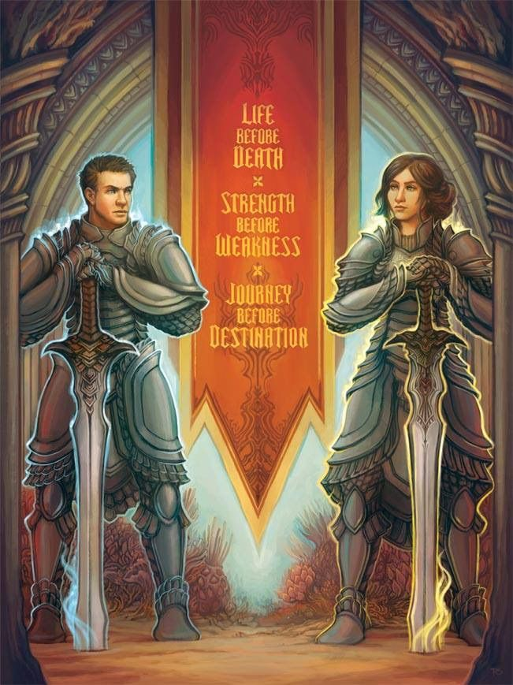
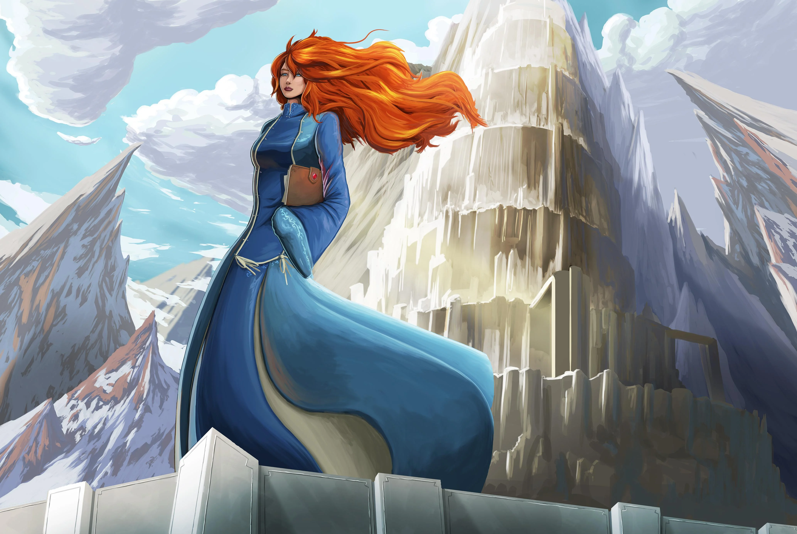
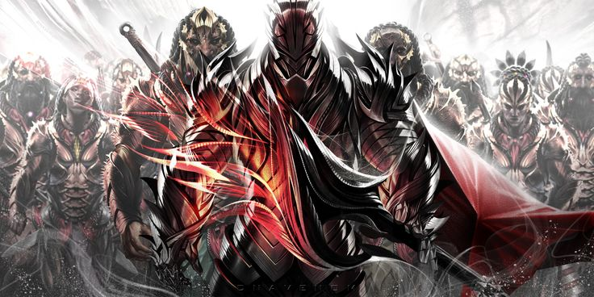

“ Es innegable que respondieron de inmediato y con gran consternación, ya que estos eran los primeros entre los que jurarían y abandonarían sus juramentos. El término Traición no se aplicó entonces, pero desde entonces se ha convertido en un título popular con el que se nombra este evento. ”

Urithiru: Ciudad de Reyes
HISTORIA DE LA CIUDAD-TORRE
—Palabras Radiantes capítulo 38, página 6[1]
PRE-TRAICION
Urithiru se construyó en algún momento temprano durante la era de los Reinos Plateados. Inicialmente, muchos deseaban que se construyera en Alezela; sin embargo, finalmente se construyó en otro lugar, en un lugar considerado "más cercano a Honor". No está claro si fue creado por Heraldos, Potenciadores o dioses, pero estaba más allá de la capacidad de creación de los Radiantes. Aunque no está claro si se construyó originalmente para este propósito, Urithiru era el cuartel general de las órdenes de los Caballeros Radiantes, así como el centro de los Reinos Plateados, con diez tronos, uno para cada rey. Incluso después del final temporal del ciclo de las Desolaciones, siguió siendo un lugar importante tanto como el hogar de los Radiantes como el centro de las Puertas Jurada. Durante ese tiempo, Urithiru tenía una gran población no solo de Radiantes, sino también de gente común: sirvientes, comerciantes, artesanos, etc. En un momento, el Re-Shephir Deshecho invadió la torre y fue atrapado y sellado por un Tejedor de Luz desconocido.
Eventualmente, los sistemas que permitieron a las personas habitar Urithiru, lo que es más importante, elevar su temperatura para permitir que las personas vivan rápidamente y cultiven alimentos, comenzaron a fallar cuando el Hermano se perdió de la gestión de Urithiru después de sentirse traicionado por Melishi y los Radiantes, y después de la captura. de Ba-Ado-Mishram.
Entre esto y el Día de la Traición, las Puertas Juradas en las 9 ciudades sobrevivientes fueron selladas, dejando a Urithiru aislado del mundo.

Caballeros Radiantes y su primer ideal.[2]
ERA DE LA SOLEDAD
Algún tiempo después de que la torre fuera abandonada, Re-Shephir salió de su encierro, pero permaneció dentro de la torre.
Aunque Urithiru se había convertido en un mito en la Era de la Soledad, Szeth estaba familiarizado con él y lo visitaba a menudo después de convertirse en un Sin Verdad. Había pasado por el pueblo al pie de la montaña de la torre tantas veces que reflexionó que en algún momento, habían comenzado a pensar en él como una especie de dios, omitiendo tributos de esferas para que las usara como luz tormentosa.
Jasnah Kholin comenzó un esfuerzo por redescubrir la ciudad después de estar convencida de que se avecinaba una nueva Desolación. Si bien ella misma no pudo hacerlo, su alumna, Shallan Davar, logró completar sus trabajos y señalar la ubicación de Stormseat, una antigua ciudad que poseía una Puerta Jurada, pero que fue destruida mucho antes de que Urithiru fuera abandonada. eventualmente condujo al ejército alezi a Stormseat, ahora una ciudad de oyentes llamada Narak, y, cuando los oyentes convocaron la Tormenta Eterna, los transportó a través de su Puerta Jurada, redescubriendo Urithiru.

Shallan en Urithiru.[3]
LA VERDADERA DESOLACION
Tras la llegada de la Tormenta Eterna, Urithiru se convirtió en el centro del poder militar de la coalición de monarcas, liderada por Dalinar y los alezi. La mayoría de los altos príncipes, el principal de ellos la Casa Kholin, se reubicaron allí junto con sus ejércitos. Los alezi empezaron a rehabitar la torre, llegando incluso a dividirla en secciones a las que llamaron "principados". Sin embargo, no pudieron activar la mayoría de los sistemas de Urithiru, como la calefacción o el ascensor principal. Después de una serie de extraños accidentes, Re-Shephir fue localizado y desterrado de la torre por un equipo dirigido por Shallan Davar. Varias puertas juradas, las de Vedenar, Azimir y Ciudad Thaylen, se desbloquearon para volver a permitir el transporte rápido por el continente.
Como preludio de la Batalla de Thaylen, los Portadores del Vacío atacaron Urithiru a través de la subvertida Puerta Jurada de Kholinar. Aunque inicialmente tuvieron algo de éxito, finalmente fueron expulsados de la ciudad.

Portadores del Vacío.[4]